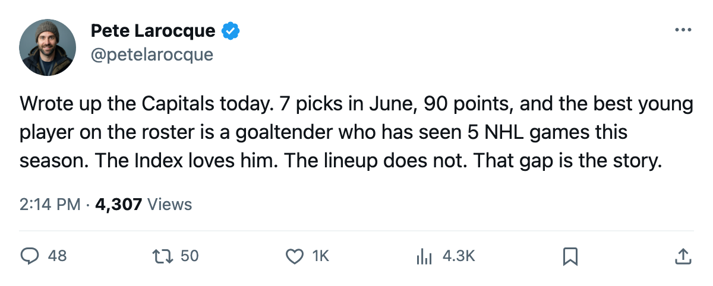
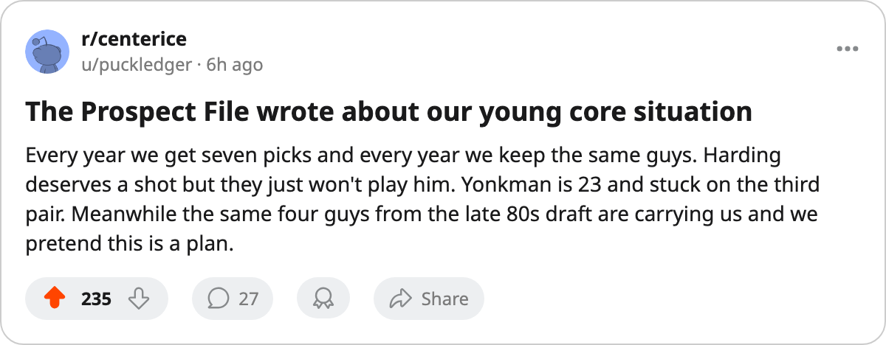

Washington Owns 7 Picks. The Bureau's Top 40 Under 23 Has 2 Capitals. One Has 5 Games.
Josh Harding is up five on the Development Index with an 83 potential. He has played 5 games for a 90-point team whose core was drafted between 1989 and 1995.
 Pete LarocqueScouting editor · The Prospect File
Pete LarocqueScouting editor · The Prospect File
The piece
 Washington Capitals enter June with 7 selections across 5 rounds. Only
Washington Capitals enter June with 7 selections across 5 rounds. Only  St. Louis Blues holds more. The Development Index has Josh Harding74 up five places from a base of 74 to 80 overall, with a potential the Book puts at 83. He has played 5 games this season. Nolan Yonkman70 is the other Capital in the Bureau's top 40 players under 23: 76 overall, up three, 17 points in 60 games, 20.2 minutes a night, 23 years old. Two names, and the goaltender hasn't played a full game.
St. Louis Blues holds more. The Development Index has Josh Harding74 up five places from a base of 74 to 80 overall, with a potential the Book puts at 83. He has played 5 games this season. Nolan Yonkman70 is the other Capital in the Bureau's top 40 players under 23: 76 overall, up three, 17 points in 60 games, 20.2 minutes a night, 23 years old. Two names, and the goaltender hasn't played a full game.
Washington sits on 90 points, 2nd in the Southeast, inside the playoff field. The top of this roster was assembled between 1989 and 1995. The goaltender who won the Vezina last season,  Olaf Kolzig87, went 19th in 1989. The two wingers carrying the offense were drafted in 1990. The top defenseman went 14th in 1992. A decade-old core, two names in the pipeline.
Olaf Kolzig87, went 19th in 1989. The two wingers carrying the offense were drafted in 1990. The top defenseman went 14th in 1992. A decade-old core, two names in the pipeline.
The picks they own from other clubs tell you what front offices think: Toronto's 2nd and Tampa Bay's 3rd. No first-rounders acquired, no late-round stashes. Just two mid-round selections and their own five.
The 2004 draft tells you what a thinned pipeline looks like. Washington took Leo Lopatin61 23rd overall, a goaltender now 19 years old, and he has played 3 games with a 67 overall and a 68 potential. He is scratched. Behind him the 2004 class carries no other Capital on the active roster.
| Team | Picks held | Firsts | U-23s in Bureau top 40 | Best young player by GP | GP | Points |
|---|---|---|---|---|---|---|
| St. Louis Blues | 8 | 2 | 0 | — | — | — |
| Washington Capitals | 7 | 1 | 2 | Harding (G) | 5 | — |
 Detroit Red Wings Detroit Red Wings | 6 | 2 | 0 | — | — | — |
 Pittsburgh Penguins Pittsburgh Penguins | 6 | 1 | 0 | — | — | — |
 New York Islanders New York Islanders | 6 | 1 | 1 | DiPietro (G) | 55 | — |
 Florida Panthers Florida Panthers | 6 | 1 | 3 | Bouwmeester (D) | 73 | 27 |
 New York Rangers New York Rangers | 6 | 1 | 1 | Blackburn (G) | 3 | — |
Florida is the one that worked. The Florida Panthers Panthers own 6 picks, and the Bureau's under-23 list carries 3 Panthers:  Jay Bouwmeester78 at 78 overall in 73 games,
Jay Bouwmeester78 at 78 overall in 73 games,  Vaclav Nedorost78 at 78 with a +6 Index,
Vaclav Nedorost78 at 78 with a +6 Index,  Kristian Kudroc74 at 74 with 32 points. They built the inventory and then drafted men who play.
Kristian Kudroc74 at 74 with 32 points. They built the inventory and then drafted men who play.
Washington drafted Harding with the 38th pick in 2002. He is their best result from the last four drafts by overall grade. Everything else from 2001 onward is Karel Pilar at 75 in 15 games, or Darcy Hordichuk at 64, or Leo Lopatin at 67 in 3 games. The Book says Harding could be an 83. The record says he has not seen a full season of NHL competition since he was 17 years old.
 Cory Sarich68 rounds out the picture from the other direction. He is a -3 faller on the Development Index, down from a base of 78 to 74 overall, 70 games played at 26. The Bureau thinks he is getting worse. No one under 23 on this roster is on an upswing except Harding, and he has no ice to swing on.
Cory Sarich68 rounds out the picture from the other direction. He is a -3 faller on the Development Index, down from a base of 78 to 74 overall, 70 games played at 26. The Bureau thinks he is getting worse. No one under 23 on this roster is on an upswing except Harding, and he has no ice to swing on.
When the 1990 draft class steps off the ice, the only names the Development Index is bullish about belong to a goaltender who has played 5 games and a defenseman 3 years from unrestricted free agency who has scored 17 points in 60 games at 20.2 minutes a night. Seven picks won't close that gap if nobody upstairs thinks it's a gap.

